所有圖片直接由 LVGL 9.5 RGB565 framebuffer 匯出。layout JSON 由同一個 LVGL object tree 讀取。此頁只作預覽；Remotion 請讀 remotion-manifest.json。
remotion-manifest.json
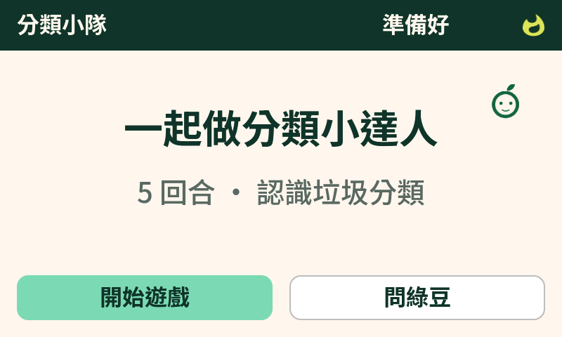
idle
開始遊戲或進入綠豆對話；主頁沒有長按操作。
layout JSON · SVG
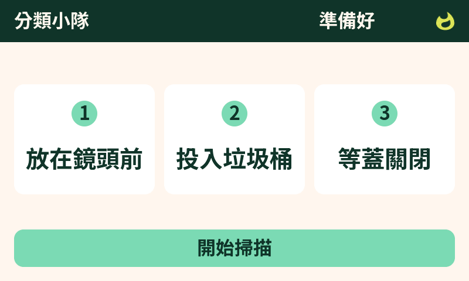
intro
三步玩法：放在鏡頭前、投入垃圾桶、等蓋關閉。
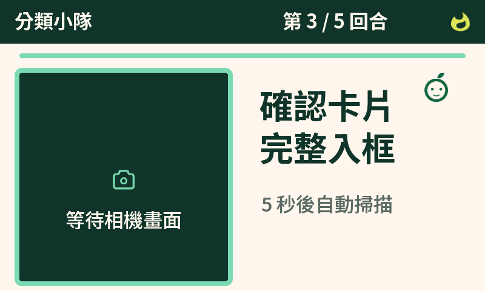
scan_ready
顯示相機預覽；5 秒倒數後自動掃描。綠豆長按可退出回合。
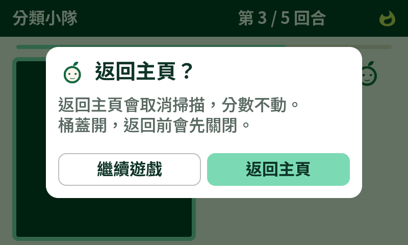
scan_logout_confirm
scan_ready 長按綠豆後顯示的確認覆蓋層。
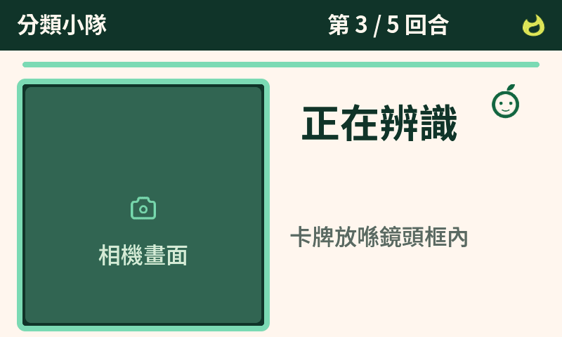
capturing
相機畫面與掃描動畫；玩家在此階段不需要操作。
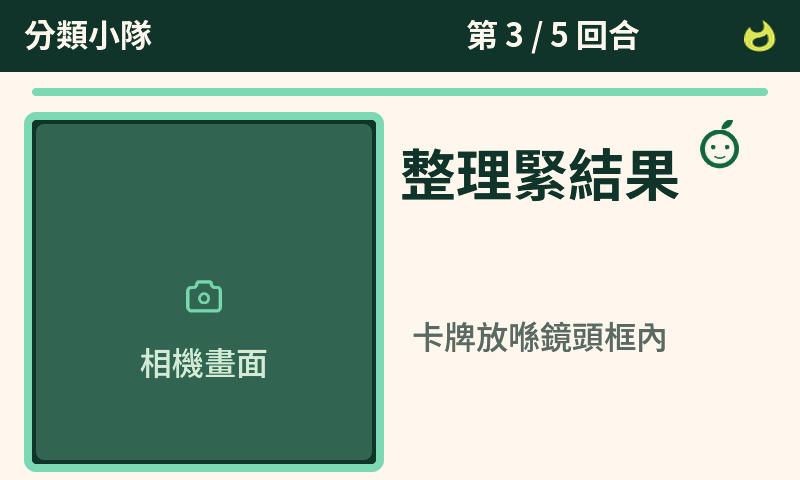
classifying
影像已取得，等待模型整理結果。
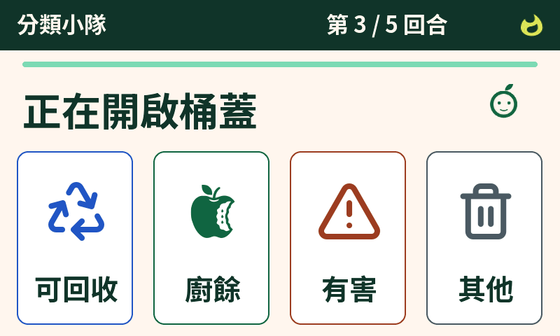
result_ok
S3 開啟四個桶蓋；模型類別保持隱藏，避免在投放前洩露答案。
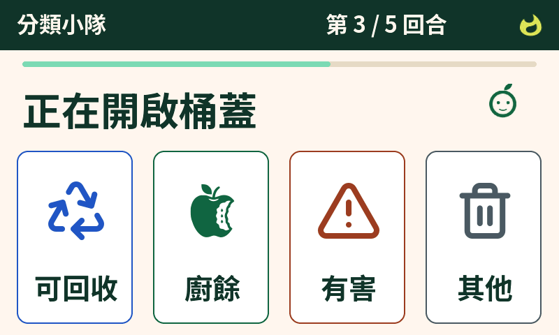
result_ok_2s
result_ok 的 2 秒時間點，用於示範頂部時間條收縮。
result_ok_lid
result_ok 的 lid_open 變體；實際硬件回報蓋已開啟。
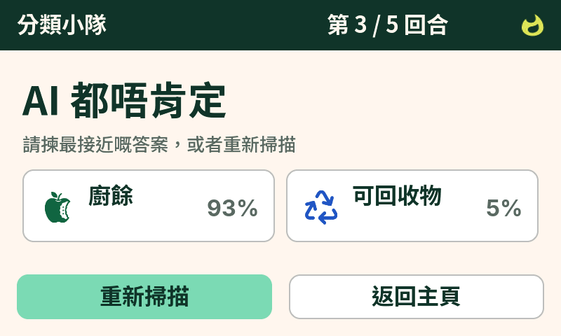
result_retry
顯示兩個候選類別，讓玩家重新掃描或返回主頁。
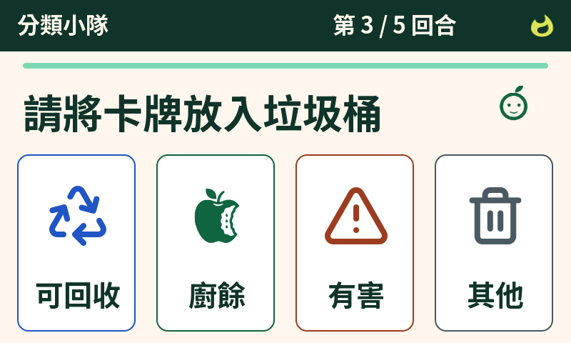
bin_choice
四個桶已開啟，等待 S3 TOF 回報實際投放。
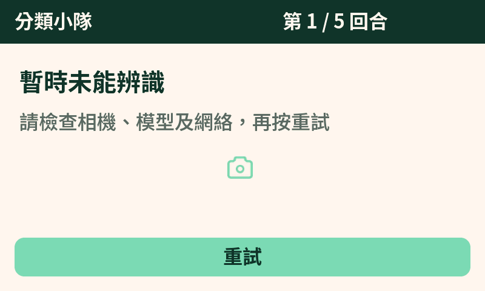
error
錯誤代碼對應的玩家文案與重試操作。
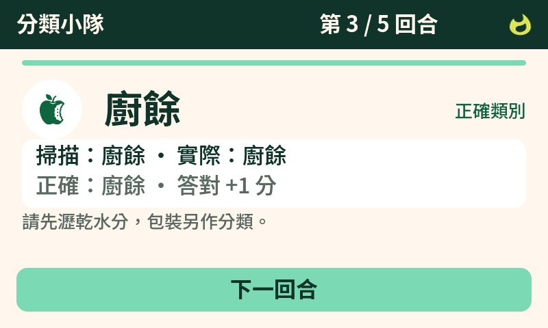
learning
顯示掃描類別、實際投放、正確類別、得分與分類提示。
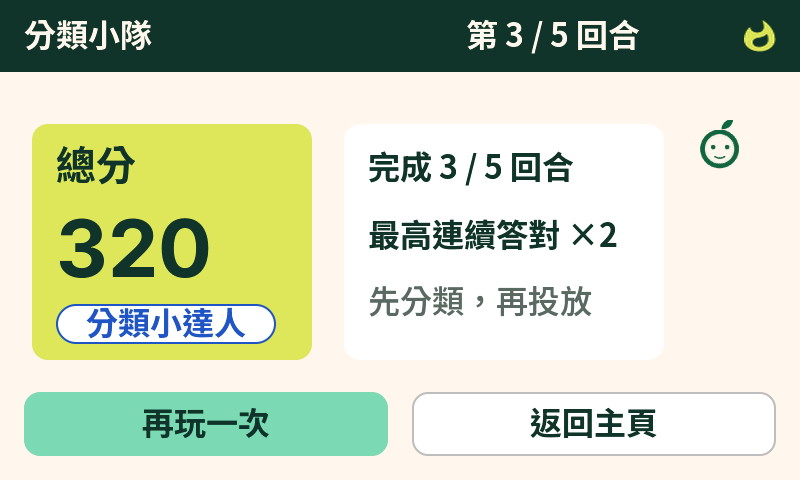
summary
總分、完成回合、最高連對，以及再玩一次／返回主頁。
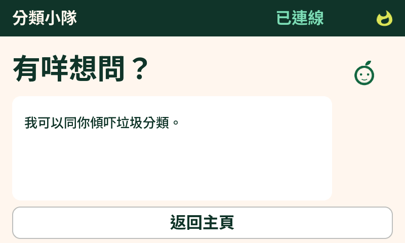
ask_ready
綠豆對話待命畫面。
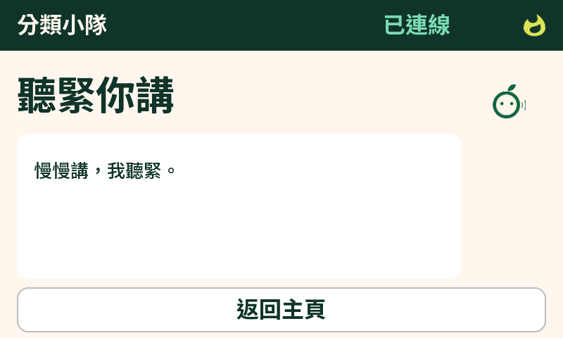
ask_listening
咪高峰正在接收玩家語音。
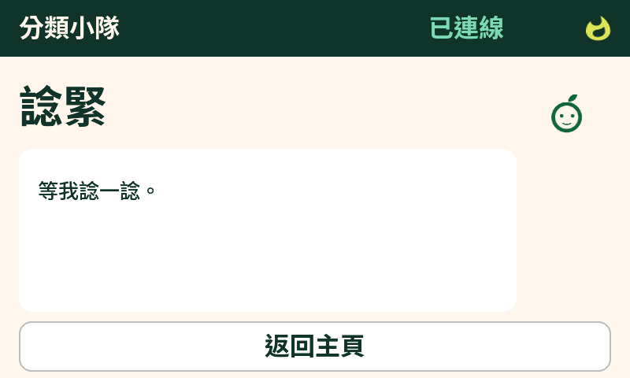
ask_thinking
已收到問題，等待回覆。
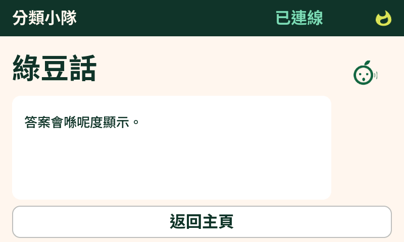
ask_answering
顯示綠豆的短回答。
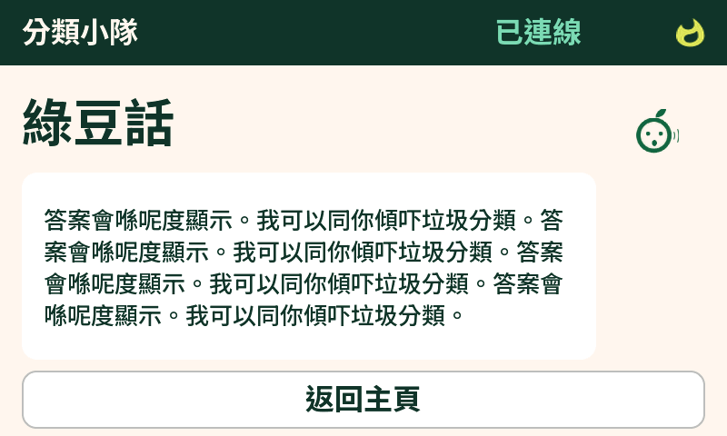
ask_answering_long
長回答的換行與滾動區域變體。
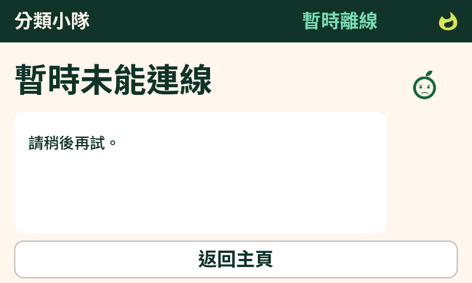
ask_offline
語音服務不可用時的離線提示。
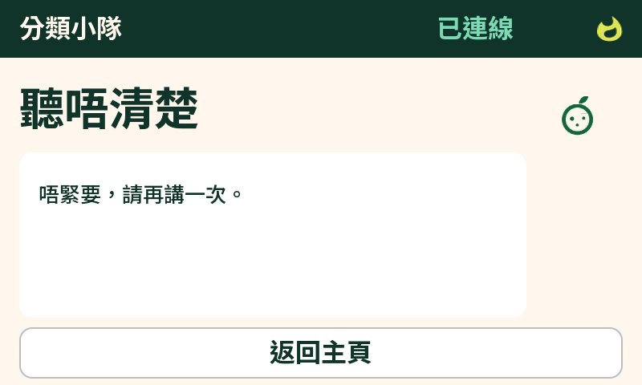
ask_asr_retry
語音辨識失敗後的重試提示。
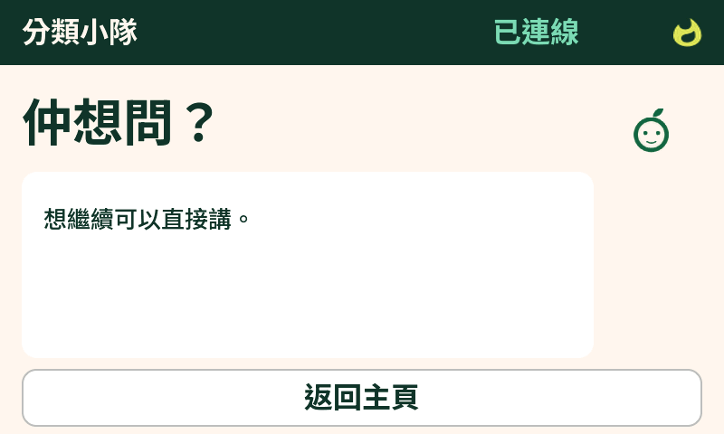
ask_countdown
對話完成後返回遊戲的倒數狀態。
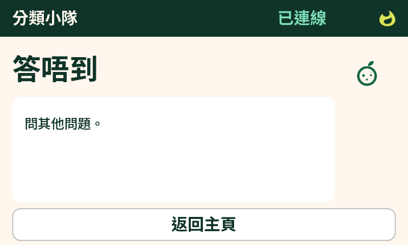
ask_no_answer
沒有收到回答時的提示。
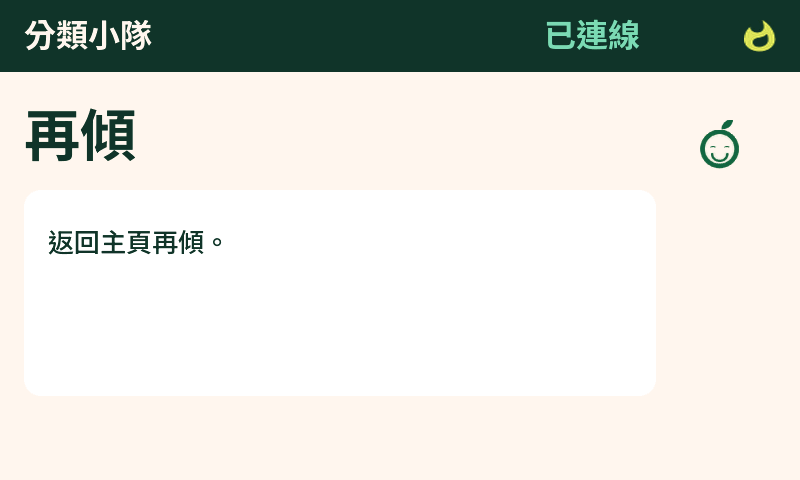
ask_goodbye
結束對話並返回遊戲。
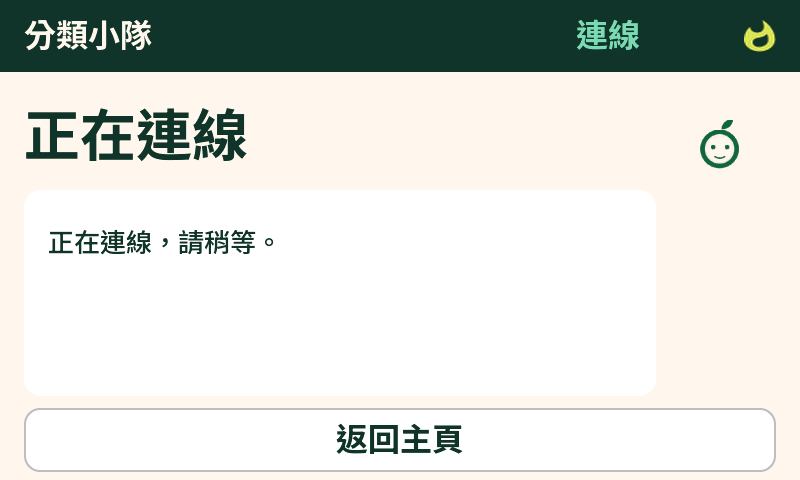
ask_connecting
正在連接語音服務。
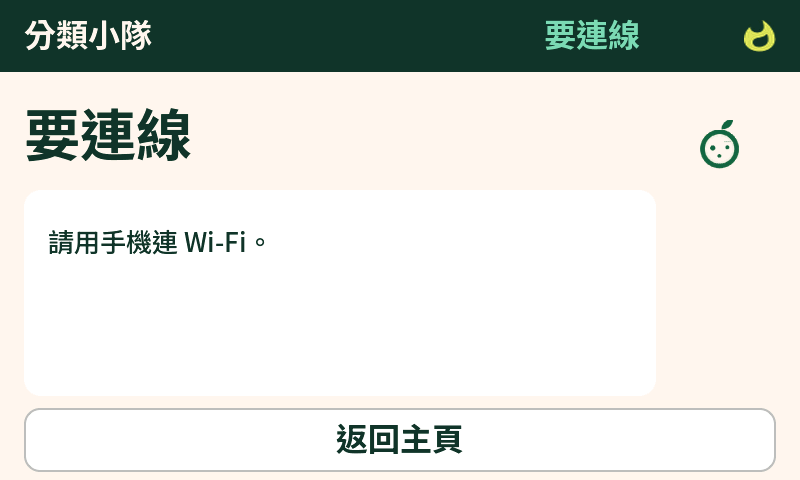
ask_provisioning
裝置需要完成 Wi-Fi 或語音服務設定。